AUTH-01 · Welcome

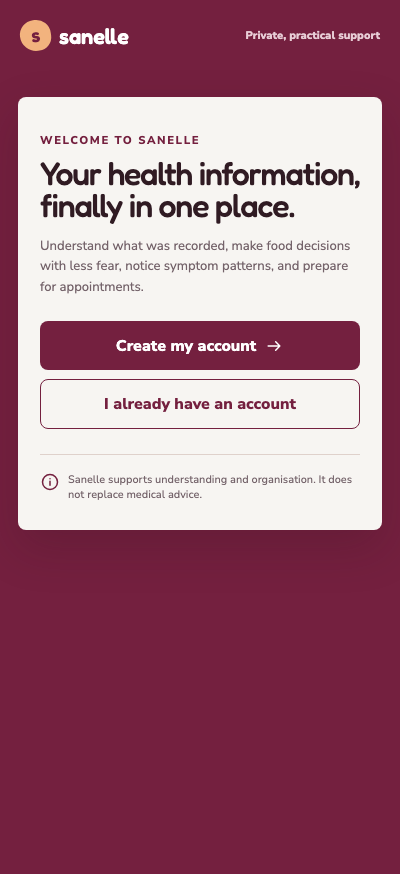
Welcome, account entry and corrected five-step onboarding · 8 October 2026
Reference: the original React prototype in Downloads/project.zip, independently rendered beside the working Angular app.



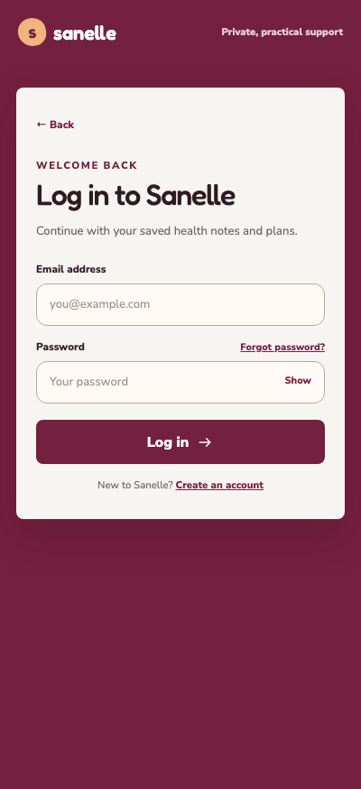

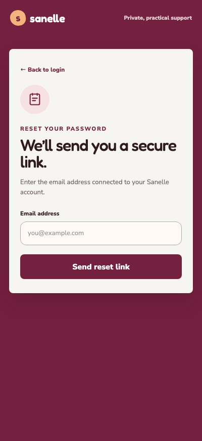
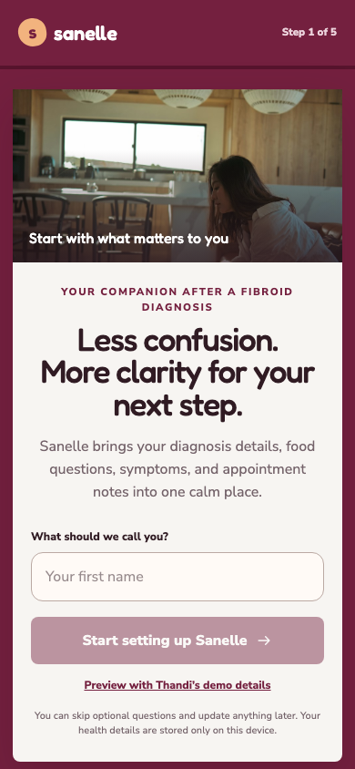


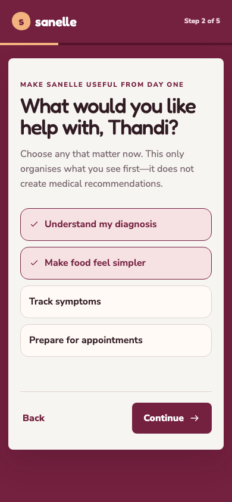


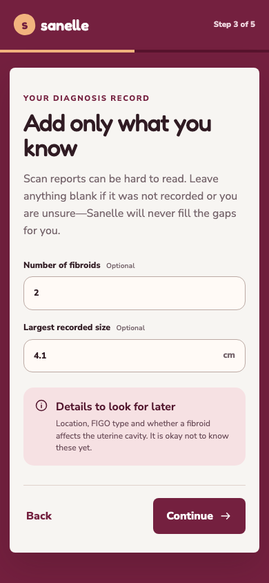


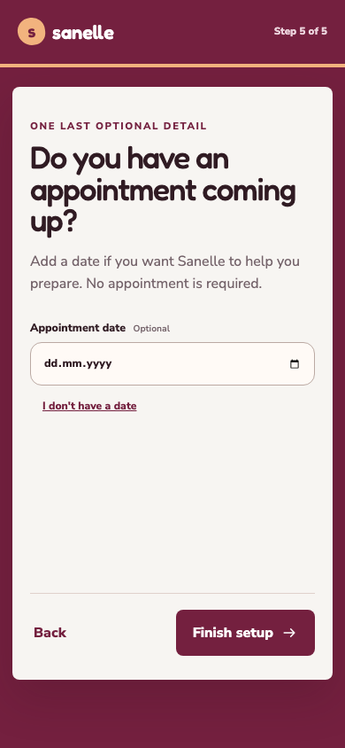


The separate summary follows the user’s explicit corrected journey. It is absent from the original prototype.


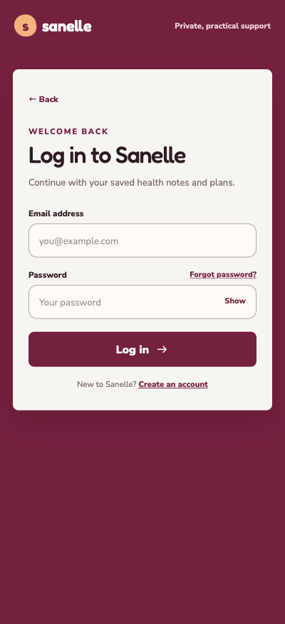

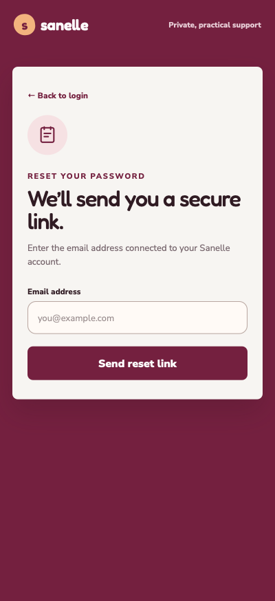

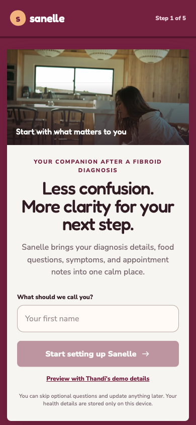


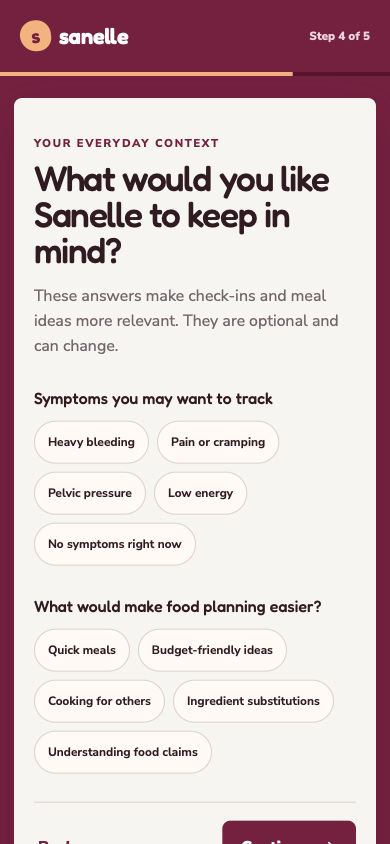


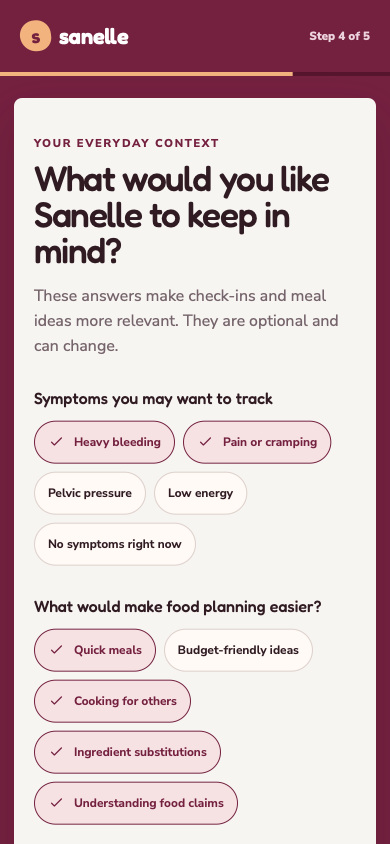


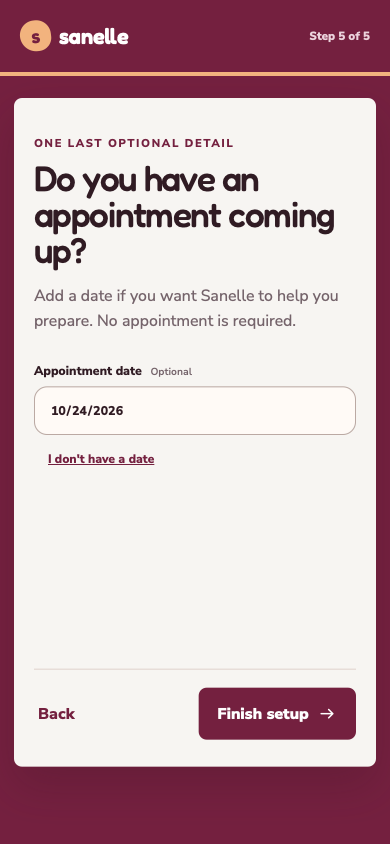

The separate summary follows the user’s explicit corrected journey. It is absent from the original prototype.
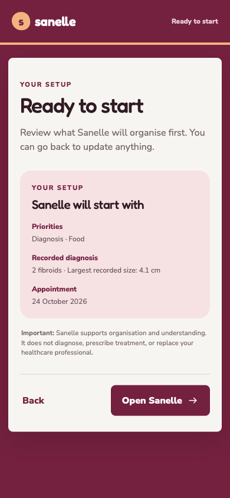